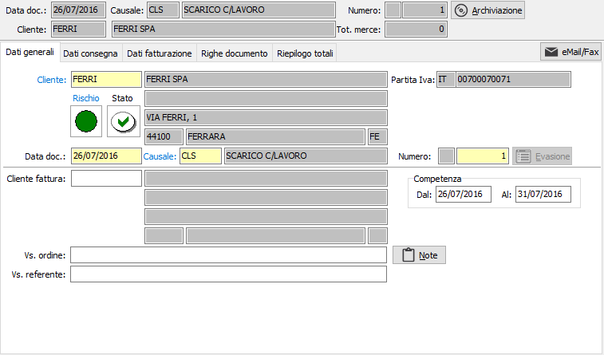
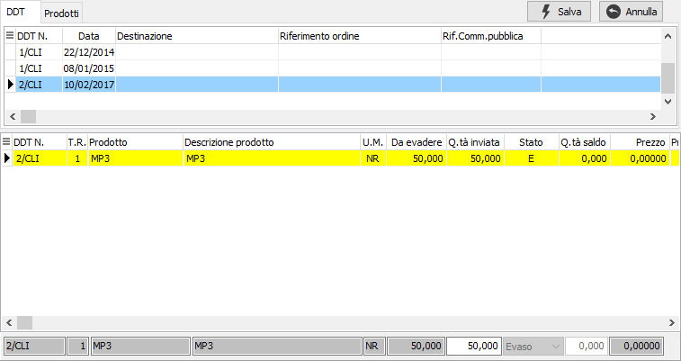
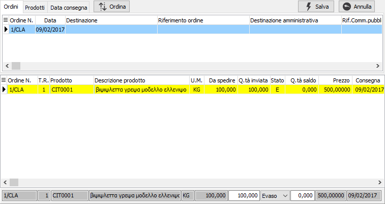
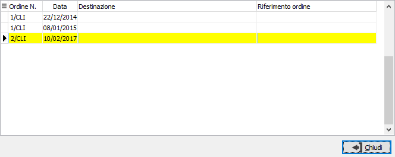
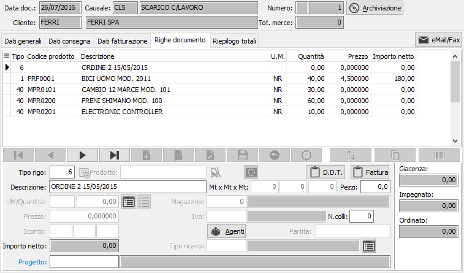

Gestione Ddt di uscita
La procedura consente l’inserimento dei Ddt di uscita dei prodotti lavorati per il cliente, l’evasione dell’ordine del cliente e l’eventuale restituzione dei materiali forniti; le modalità di inserimento sono del tutto simili a quelle previste per l’inserimento dei normali Ddt di vendita.
In fase di inserimento è proposta la causale preferenziale inserita in OS1Config, per questo tipo di documento sono accettate solo causali Ddt previste per l’inserimento di Ddt di tipo “Ddt di uscita conto lavoro attivo” le sole visualizzate tramite lo zoom sul campo Causale.

Tramite il pulsante “Evasione” si può accede alla finestra di evasione diretta dei Ddt di carico, ad esempio per un reso, nella quale selezionare i materiali oggetto dell’invio.

Tramite il pulsante “Evasione” si può accede alla finestra di evasione ordini nella quale selezionare gli ordini oggetto dell’invio.

Dopo aver confermato l’ordine nel caso in cui in configurazione sia stato indicato il tipo di evasione Ddt di ingresso selettiva sarà visualizzata un’ulteriore finestra in cui indicare i Ddt da utilizzare per l’evasione dei materiali componenti.

In caso di evasione Ddt di tipo automatico non sarà visualizzata alcuna finestra e la selezione dei Ddt da utilizzare per l’evasione sarà effettuata secondo le priorità indicate in Os1Config.
In questa fase per ogni rigo di composto evaso vengono cercati nella scheda tecnica i componenti forniti dal cliente e per ciascun componente vengono ricercati i Ddt di ingresso e vengono scaricati (nell’ordine stabilito dai parametri della configurazione “Conto lavoro attivo”) per avere una situazione dei residui dei Ddt di ingresso materiali; le righe di “evasione” dei Ddt di ingresso sono utilizzate solo ai fini predetti, non dovranno essere né fatturate né stampate nel documento di scarico a tale scopo vengono generate con il tipo rigo specificato nella configurazione conto lavoro attivo.
Attenzione: sullo stesso documento se viene inserito un rigo da Ddt non sarà possibile evadere gli ordini; se vengono prima evasi gli ordini sarà poi possibile inserire delle righe derivanti da Ddt.

In questa fase è anche possibile effettuare l’invio del materiale non lavorato tramite l’utilizzo di un tipo rigo specifico da non riportare in fattura collegato tramite la causale Ddt ad una causale di magazzino per lo scarico.
Al momento del salvataggio del documento viene aggiornata la quantità evasa dell’ordine e la quantità evasa del Ddt di ingresso. Il Ddt generato può essere utilizzato dalle normali procedure per la generazione della fattura.
Tutti i Ddt del conto lavoro attivo sono visibili nelle analisi presenti nella gestione dei Documenti di trasporto indicando la tipologia di Ddt da visualizzare, con la possibilità di indicare se includere o escludere tali Ddt.